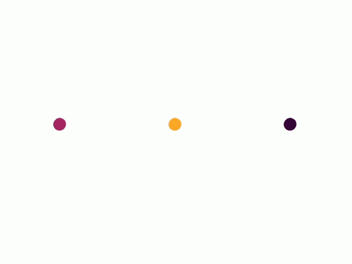
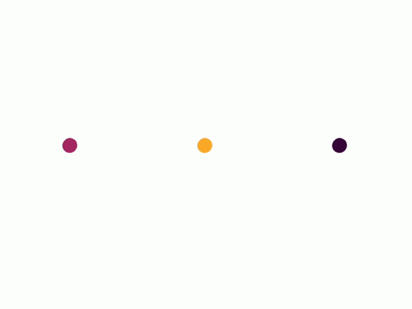

Hello!
My name is Zingsho Vashum
I am a Designer: Communication | UX | Interaction | Maker
I explore and conceptualize product with a maker-mindset focusing on human and object interaction.
I am currently volunteering in a non-profit organization as UX and content designer in Berlin.


An illustrative journey of snow.
A prototype installation of immersive storytelling into wonders of morphing snowflakes ."Making scientific processes tangible and understandable for everyone: This was the goal of master's student Zingsho Vashum (M.A. Communication Design) in her final project. She took a closer look at the formation of snow and designed, among other things, an installation that allows viewers to engage with this fascinating natural phenomenon in a haptic and accessible way." HMKW-news 08/02/2021
My project idea combines the areas of data visualization, inclusive design, illustration, and the recreation of natural forms with the help of visual programming. Through interactive storytelling, the project aims to bring the viewer closer to scientific processes and provide an immersive learning experience. The goal of the project is to reconcile illustration and science. Viewers can interact with the installation - and thus have a more lasting experience than if they could only look at it or read the accompanying text. My entire Master thesis and documentation can be found here
Insane in the chromatophore.
A graphical mashup of neuroscience, music and cephalopod
"We are always looking for ways to explain neuroscience in new and interesting ways. One of our
main goals is to expand the teaching of neuroscience in High School classrooms. Having compelling
demonstrations helps both the teachers and students."
Greg Gage
The short paper of “The science behind the “Insane in the chromatophores” video written by Mera Mcgrew, Paloma T. Gonzalez-Bellido, a neuroscience postdoctoral associate in The Marine Resource Center of the Marine Biological Labs, explains that neurons control the pigmented coloration in the squid skin. I had made a graphical attempt to fabricate the experiment of how the pigmentary elements called Chromatophores found in the skin of cephalopods can be controlled neurally and change the skin color of the squid by stimulating the Chromatophore motoneurons with the electrical signals produced by the Hip-hop beat of 1993 Cypress Hill hit “Insane in the brain”. Video
 

Dit and Dah
An interactive ebook on Morse CodeThese pages filled with dots and dashes will be a starting point for you to engage in a nonverbal world of communication called Morse code. Originally Morse code was a vital method of radio communication during the second world war and a standard distress communication until 1999, but many innovative geniuses are bringing back this communication as a creative platform. Because Morse code is a cryptic code that can only be deciphered by a small percentage of people who have been trained or have learned to use it, it feels like it is unprecedented in the world of creative communication.
Dit and Dah is an interactive eBook filled with dots and dashes introducing the basics of Morse Code. It contains simple visualization of the two distinct sound, light morse code in a simple layout on the screen and example of creative ways Morse code have been used in the history.This book started as my semester project for Cross-Media Publishing in print format which turned into an actual ebook published under Eeclectic.de
Workshops and explorations
Ask me Anything!
You have come this far. Thank you for your time!